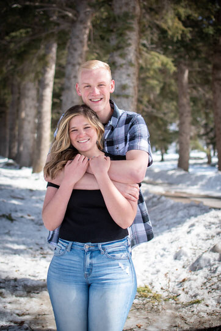

About Me
Welcome to my online personal website! This is an online site demonstrating my current skills as a website developer for future employers, social media, and friends who may be interested in helping me grow my skills or hiring me to develop a project for them. This serves as an online resume showcasing my current skills in the simple way I share a little bit about myself, my history of work, and experience I have. This page tells a little more about who I am, where I come from, and what you can expect from working with me! * Note this page is updated frequently and is subject to updates as I wish to share more.
My name is Chandler Murphy, I'm 21 years old, and I come from a family of 6. I was born in Taylorsville, Utah; but moved to Mt. Pleasant, Utah, before the age of 8. I have lived there for most of my life, attending school faithfully and remaining academically inclined throughout my highschool years. I love being with my family. Collectively we love having “family board game nights”, going on camping trips, eating out at restaurants, attending highschool sports, attending church, and visiting inlaws.
June of 2023 I was married to my beautiful wife, Josclynn, and have since removed to Ephraim, Utah for school. We are both very excited for our new life together and are anxious to continue our involvement in college. We both have big dreams and love making memories together!
My Wife and I
Happily Married!
I myself, although an introvert in most cases, enjoy the fulfillment that school and family associations can bring. I love building relationships, value communication, and cherish trust. I am an anxiously engaged individual. I love to work and I know how to work smart.
A Little of Me
A Great Man!